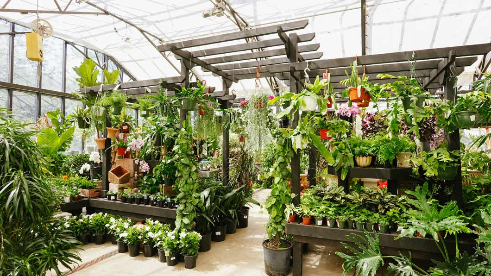

Check out our latest arrivals in the "Shop" section—just in time for January 2025!
We've stocked up on beautiful winter-flowering shrubs like Camellia, Witch Hazel, and
Winter Daphne, perfect for adding color and fragrance to your garden during the colder
months. Whether you're looking for evergreen structure or early blooms, our newest
selections will help you refresh your landscape. Head to "Shop" now and find the
perfect shrub for your space!
Our Story
Based in Tucson, Arizona, Lucky Shrub was founded by a husband-and-wife team, Jason and Maria,
who share a deep passion for plant life. Their journey began with a simple idea—to make it easier
for gardeners to find and care for high-quality shrubs suited for the region’s climate. What started
as a small collection of their personal favorites soon blossomed into a one-stop shop for beautiful,
low-maintenance, and sustainable shrubs that enhance any landscape.
At Lucky Shrub, we believe that shrubs are the backbone of a great garden. They provide structure,
color, and year-round interest, transforming outdoor spaces into vibrant, thriving landscapes. Our
goal is to offer a carefully curated selection of healthy, hardy shrubs that will not only survive
but thrive in your garden.
Why Choose Us?
✅ Wide Selection – From flowering shrubs to evergreens, we offer a diverse range of species
suited to different climates and garden styles.
✅ Expertly Grown & Hand-Picked – We source our shrubs from trusted growers to ensure you receive
the best quality plants.
✅ Eco-Friendly & Sustainable – We promote native plants and eco-conscious gardening practices to
support pollinators and local wildlife.
✅ Gardening Advice & Support – Need help choosing the right shrub? Our team is here to guide
you every step of the way!
Plan a Visit Today!

We’d love to welcome you to Lucky Shrub and help you find the perfect plants for your landscape. Our
nursery is located in the heart of Tucson, Arizona, where we specialize in offering a diverse selection
of shrubs suited to the local climate. Whether you're a seasoned gardener or just getting started, our
knowledgeable team is here to provide expert advice on plant selection, care tips, and landscape planning.
Stroll through our collection, explore our thoughtfully curated displays, and see firsthand the beauty
and resilience of our shrubs. Visit us today to discover how we can help you create a stunning, sustainable
garden that thrives year-round.